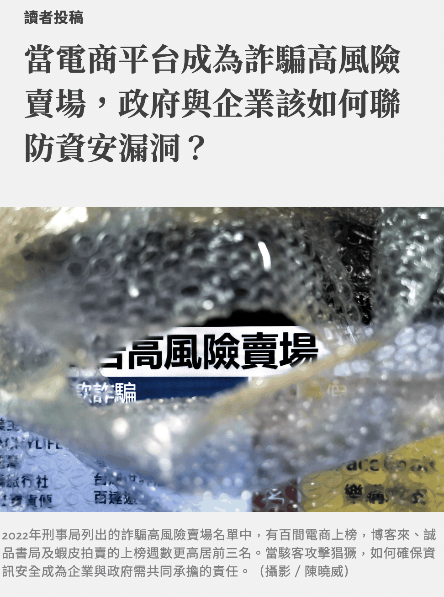
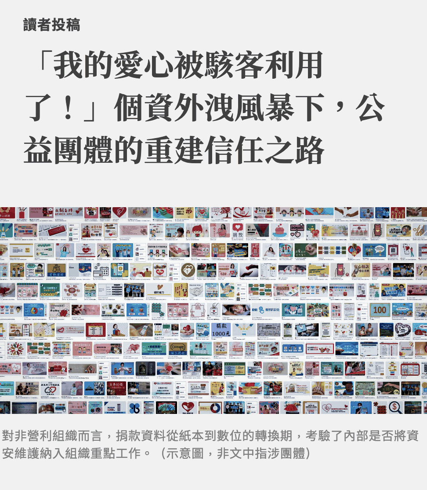

This article is written in Chinese.
2023.02.10 · 專題幕後
【專題幕後】電商個資外洩問題一籮筐：還有哪些沒被好好述說？
2月8日報導者粉專推播我們的文章過後，截至目前為止，電商個資外洩篇逾千讚、NGO個資外洩逾百讚。不過有趣的是下面的留言，不少的批評與迴響，算是讓我又驚又喜，也有一點點無奈，因此也在這篇順道一併述說。
刊登於報導者文章請見下方網址：
- 當電商平台成為詐騙高風險賣場，政府與企業該如何聯防資安漏洞？ https://www.twreporter.org/a/personal-data-leaked-e-commerce

- 「我的愛心被駭客利用了！」個資外洩風暴下，公益團體的重建信任之路 https://www.twreporter.org/a/personal-data-leaked-npo-donators

【專題幕後】電商個資外洩問題一籮筐：還有哪些沒被好好述說？ #投稿的報導者文章請見留言
2月7日終於在報導者刊登了本學期最後一份作品（花最久ㄉ一份期末），必須老實說還是有許多不足，但我們也共同努力、也盡力了。
2月8日報導者粉專推播我們的文章過後，截至目前為止，電商個資外洩篇逾千讚、NGO個資外洩逾百讚。不過有趣的是下面的留言，不少的批評與迴響，算是讓我又驚又喜，也有一點點無奈，因此也在這篇順道一併述說。
#為什麼去年高風險賣場排行榜沒有讀冊生活 今年確實讀冊幾乎沒有上榜，反而在過去民國107年、108年居排名前十，而當時經濟部商業司多次針對個資外洩事件進行大規模的行政檢查，最終也根據個資法祭出多次罰鍰。讀冊並沒有因此沒付出代價，這篇文不是業配文。
#為什麼只訪讀冊董事長 在此之前，我們早已花了相當多的時間回覆那些在2022年曾經上榜的所有店家（甚至包含曾經上榜的店家），沒有一家願意公開表達自己發生了什麼狀況、採取什麼行動，包含讀冊。我們也被公關所打發走，直到報導者的協助下，我們才有機會與董事長一談，因此成為了主線故事。
而嘗試訪博客來，他們僅希望以書面意見回覆，我們也如實陳述。
但報導內容也不僅僅是如此，我們也找到過去曾經因讀冊生活個資外洩的受害者，也找到了公部門針對體制的回應。事實也確實是讀冊近期努力了不少，但是否還會繼續存在問題，沒人能保證，我們也沒有保證。
報題階段，電商個資外洩真的是洗澡時忽然靈光一閃的題目，也沒有想過是否可行（甚至發現受訪者超級難找時覺得相當不可行），但最終仍然硬著頭皮做了下去。
最終採訪了超過20名受訪者，包含學者、公部門（數發部數產署、經濟部商業司、刑事局研發科、刑事局165）、受害者（王品APP、讀冊受害）、資安業者、開店平台業者、消基會、NGO、個資外洩的中小企業......，試圖拼湊出商家的「兩難」以及制度的「缺陷」。
數據層面，為了要呈現個資外洩所造成的詐騙到底有多少，其實難以預估，除了少量刑事局公開的案件數以外，實際上多少外洩案件其實是無法計算的。因此，我們僅能從少少的數據當中爬梳出大概的趨勢，包含同組組員曉芙找尋了警政署統計通報、思涵花時間將從刑事局165網站上爬到的所有2022年高風險賣場圖表並人工統計數量，得到了那張大家迴響很多的圖表。
題材部分，我們發現許多NGO個資外洩的狀況，因此也著手進行了多家NGO團體的採訪，組員以羚、曉芙分別聯絡了世展會、心路基金會，也由衷感謝他們願意出來講出他們面臨的問題與解答。雖然最終寫出來極有可能對他們不利，但希望這種利用愛心而詐騙民眾的行為被報導後，能更多人因此更有所警惕。
最後，仍然想分享幾個因為資料不足而捨棄的切角，但個人認為仍可能相當重要
- ERP系統可能是中小企業個資外洩的破口：中小企業架起一個電商，可能委託架站業者、資料管理軟體業者、物流業者等，牽涉面向極廣。受訪的產業人士認為，許多業者內部使用的ERP系統，都來自於一些小型、古老軟體公司因軟體不再更新而導致資安漏洞百出。
- 委外系統個資外洩，可能造成大規模個資外洩事件：2022年末發生最大的「開店平台系統商」個資外洩是 WACA，幾乎2022年下半年許多的電商個資外洩起因都是WACA所致。然而至今甚至沒有聽說這家平台商有被裁罰或被大肆報導。
- 現行制度「基本上幾乎不罰」，就算罰了「也罰很少」：根據刑事局的採訪，近幾年幾乎沒有任何裁罰出現，因為幾乎主管機關仍會給予非常寬容的限期改善空間，只要改善得宜，就暫時不會有事。以近期的iRent個資外洩為例，原先公路總局向媒體宣稱最高可以裁罰多少多少，然而目前看來似乎像是雷聲大雨點小（當然裁罰之前還會有長期的行政檢查與限期改善的時間，我們可以好好繼續看下去）。而「罰很少」也是為人詬病之處，相較於歐盟法，臺灣所裁罰的數額，這些企業根本不痛不癢。
- 個資專責機關何在：就算有了個資法主管機關國發會，但實際上的行政裁量仍放在主管機關。「我們國家將整個程序切成好幾個在做，」採訪刑事局所聽到最貼切的話。因此，電商的主管機關是數發部、實體店面的主管機關是經濟部、旅行社的主管機關是交通部、非營利組織的主管機關是衛福部...，這些單位是否有能力給予實際的協助，是否有能力針對個資法相關事項具體落實，其實是一大問號。呼喊多年的個資專責機關何時設立、怎麼設立，是未來重要的課題。
- 「企業好大、消費者好小」：消費者自主求償在台灣更是非常少見。個資法給予的求償數額少、訴訟成本高，也是得企業更可以好整以暇，對於個資外洩事件消費者的質疑與批評，四兩撥千斤就可以化解掉。司法實務上是否能給予消費者更大的權利、賦予企業更大的「責任」取管控資安，這是一大考驗。
最後，感謝三位組員共同度過了這四、五個月的專題過程，總在自己最無助的時候給予鼓勵與支持。沒有他們，就沒有這篇的完成，感激涕零。